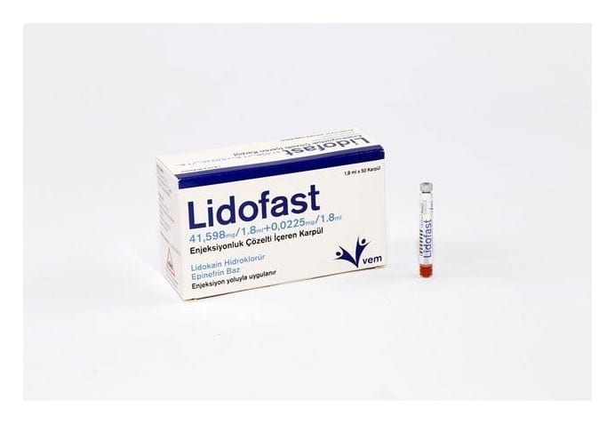

Lidofast 41,598 mg/1,8 ml+0,0225 mg/1,8 ml Enjeksiyonluk Çözelti İçeren Karpül, 50 Adet

Ne için kullanılır
KT · Bölüm 1 LİDOFAST etken madde olarak lidokain hidroklorür ve epinefrin içerir. Lidokain lokal anestezik (bölgesel anestezi yapan ilaç) olarak adlandırılan ilaç grubuna aittir. Bu ilaçlar, vücudun gerekli bölümünü uyuşturmak, hissizleştirmek için kullanılır. Bu ilacı kullanmaya başlamadan önce KULLANMA TALİMATINI dikkatlice okuyunuz, çünkü sizin için önemli bilgiler içermektedir. Bu kullanma talimatını saklayınız. Daha sonra tekrar okumaya ihtiyaç duyabilirsiniz. Eğer ilave sorularınız olursa, lütfen doktorunuza veya eczacınıza danışınız. Bu ilaç kişisel olarak size reçete edilmiştir, başkalarına vermeyiniz. Bu ilacın kullanımı sırasında doktora veya hastaneye gittiğinizde bu ilacı kullandığınızı doktorunuza söyleyiniz. Bu talimatta yazılanlara aynen uyunuz. İlaç hakkında size önerilen dozun dışında yüksek veya düşük doz kullanmayınız.
Epinefrin vazokonstriktör (damarları büzücü) olarak adlandırılan bir ilaç grubuna dahildir. Bu ilaçlar, enjeksiyon yapılan yerdeki damarları daraltarak daha az kan geçmesini ve ilacın etkisinin daha uzun süre devam etmesini sağlar. LİDOFAST tıbbi uygulamalar ve ameliyatlarda, ağrıyı önlemek için kullanılır. LİDOFAST’ın uygulama şekli, anestezinin yerine ve cinsine göre değişmektedir. Buna doktorunuz karar verecektir. LİDOFAST, berrak, renksiz çözelti içeren 1.8 ml’lik 50 karpül içeren karton kutu ambalajlarda kullanıma sunulmaktadır.